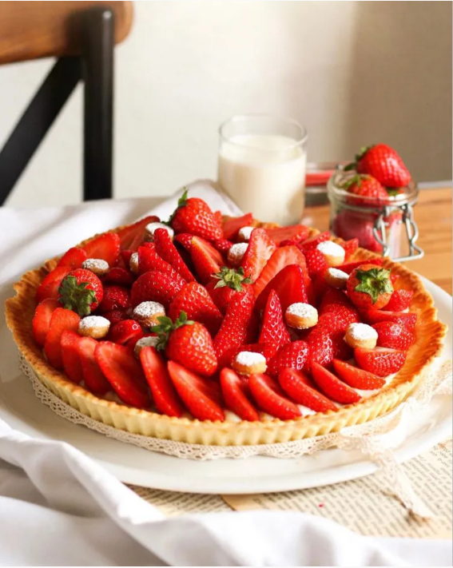

recettes de cuisine
1. Commencez par préparer la crème. Mélangez les jaunes d'oeuf avec le sucre. Battez au fouet jusqu'à ce que le mélange blanchisse. Ajoutez la farine et mélangez bien. Ajoutez la farine au mélange sucre/oeufs. Ajoutez 10cl de lait pour que le mélange soit plus liquide.
2. Mettez à chauffer le lait (90cl). Lorsque le lait est bien chaud, versez le sur le mélange précédent tout en battant bien au fouet. Puis remettez le tout à feu doux tout en continuant de battre rapidement. Mélangez énergiquement jusqu’à ce que la crème épaississe puis laissez la refroidir.
3. Passez à la préparation de votre pâte. Mettez la farine dans un saladier, creusez un trou et versez le sucre. Cassez l’œuf par dessus et rajoutez le beurre coupé en morceaux. Rassemblez et malaxez pour faire une boule. Placez votre boule de pâte dans un film plastique et mettez la au frais 10min.
4. Sortez votre pâte du frigo et disposez là dans un plat à tarte légèrement fariné. Piquez votre tarte avec une fourchette avant d'enfourner. Faites cuire 10min au four préchauffé à 220 degrés, surveillez bien la cuisson et n’hésitez pas à rajouter un peu si la pâte n’est pas assez dorée.
5. Sortez-la du four, démoulez-la, garnissez votre fond de tarte de crème et ajoutez les fraises ! Petite astuce si vous avez des chutes de pâte, vous pouvez, à l'aide d'un vide pomme formez des ronds, les enfourner puis les saupoudrer de sucre glace avant de les disposer sur votre tarte pour un effet esthétique en plus !
